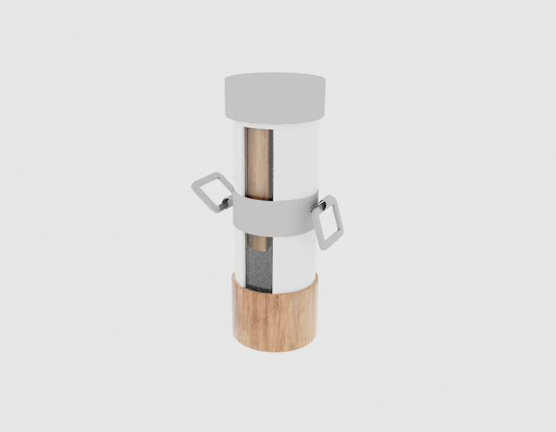
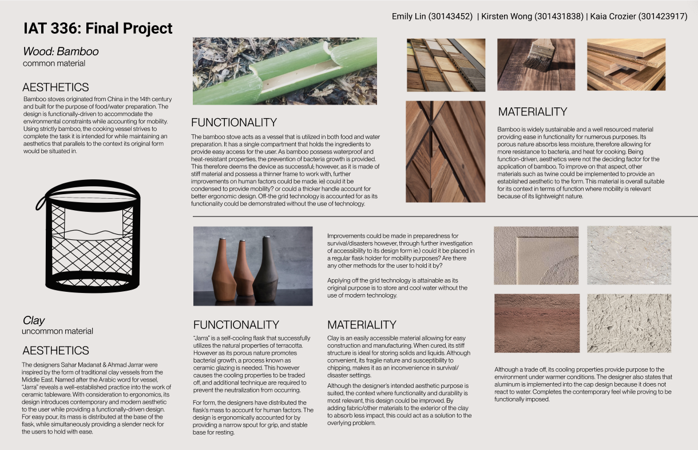

Process Analysis 1
Transportation Website

Analysis and Explanation
With the applications taught in IAT 343, the team sought to create an interactive website that
demonstrated 3D modelling techniques and principles of Animation into the final project. Our
project Translink 2050 Envision, centers on the improvements Translink aims to bring to the public
by the given date.The team viewed it as an opportunity to influence the viewing experience; we
aimed to reveal information to users differently, and so enforced user interaction to contrast
from traditional applications of 3D animation and modelling. With an interactive 3D transportation
island as the landing page, users are greeted with transportation models that each have an integrated
link leading to a unique 360-degree animated video that users can then view and interact with.
Problems and Resolution
One difficulty that we encountered while working on a 3D Modelling Software, such as Maya, was it's inability to feature collaborate editing.
Aligning with other team members turned out to be very difficult, as each individual's commitment to the project would be apparent in their individual
files. As a result, discrepancies between the existing files would occur, and the team would need to reassemble all the necessary
changes together. One benefit that came across animating in maya, was its ability to copy and paste keyframes to other files. With that in mind,
the team was able to simultaneously work on rigging and animation, and although there were visual changes to the island, it did not affect
the animation as long as it was in the same coordinate system as the previous files.
Evaluating the effectiveness
As a part of the project's objective to visualize change from user experience, the design and work to assembling an interactive website, provided
opportunities for users to interact with immersize experiences to help them get more familiar with the changes that are to come in the near future.
I was involved in the concept and design of the website, providing users of an in-depth analysis and portrayal of Transporation in 2050.
Process Analysis 2

Analysis and Explanation
After numerous hands-on experience with materials in design, the design team had been challenged to design a water purification artifact for a non-governmental organization (NGO)
that provided relief for victims of disasters and war. It required a focus on an uncommon material and common material that was drawn from a hat, and incorporated into the design.
With function and form being a main aspect into the development of a product, the team strove to understand branding with the experience of a consumer in mind. My role
was to model and build the visual design. This included understanding user experience and prototyping through a personalized solution to victims of disasters and war despite the constraints
in the involvement of materials.
Problems and Resolution

The main constraint of the design team had been aligning the given materials to the needs of a disaster victim.
As we had drawn clay and wood, the team found that it was incredibly difficult to incorporate, as these two materials were naturally very
porous to begin with, and weren't necessarily the most secure material in a survival setting. This required research and as a result, we found ways to incorporating these
elements into the design with function as a main premise.
Evaluating the effectiveness

With the class being heavily material-focused, prescribing the correct fabrication and bonding techniques proved to be a challenge in providing a correct solution.
The project's design intent to appeal to the user, while simultaenously recognizing the restrictions of a manufacturing company
revealed a need to adjust to change in an unfamiliar environment. After receiving insight by fellow mentors
the team learned to listen to the needs, motivations, and frustrations of a user to shape our final design.
Biography
Hi and welcome to my website! My name is Emily and I'm a designer based in Vancouver with a focus in digital experience. I had the opportunity to gather experience in the industry as a specialist at Apple,
which has fostered my proactive approach in team work. I approach conflict with positive intent as the basis to communicating with my peers to collectively learn and grow together. With a diverse toolkit of skills,
ranging from product design to user experience (UI/UX), I am confident in my skills to engage in teamwork and provide personalized solutions.
Website Template
Colour
When it comes to colours, I want to stay within a neutral colour palette to maintain a
minimalistic appearance. The two colours (light blue and cream) are included to complement the process analysis of the projects.
To further clarify, I would like the main pages, and any page that is not related to my projects a neutral colour palette,
but when it comes to projects, I want to designate a specific colour to that page to build a stronger connection to the given project's aesthetic (further down the road i want to use and continue building this portfolio)

Light Grey: #DBDBDB

Dark Grey:#494848

Black: #000000

White:#ffffff

Cream:#dfd4c4
Light Blue:#95a5eb
Text
Proxima Nova
Helvetica
Cambria
I want to incorporate Sans-serif to provide readability for users
Sample Navigation Bar with css